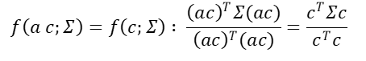
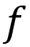
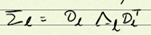

Práctica de Análisis de Componentes Principales
Juan David Ospina Arango
Analítica Predictiva
Universidad Nacional de Colombia
2 de julio de 2020
x’~f(u,Σ) tal que E[x’ ]=u y D(x’ )=Σ. Sea x=x’-u.
E[x]=0. Sea z1=c1T x. Queremos maximizar Var (Z1) =c1T Σc1. Observemos que maximizar Var (Z1 ) es lo mismo que maximizar .
Pero
.
Luego el valor de c1 que maximizar Var (Z1) es la solución del sistema Σc1=0. Esto es el espacio nulo de la matriz Σ (En este caso un conjunto infinito).
Observemos que el Hessiano de es y que bajo el supuesto de que Σ es definida positiva el determinante del Hessiano es positivo.
Busquemos ahora un c1 de norma unitaria. Es decir, tal que c1T c1=‖C1 ‖2=1. Ahora maximizaremos
Los valores propios y vectores propios de una matriz satisfacen Avi= λi vi. Los λi son los valores propios y los vi son los vectores propios.
Observemos que si dejamos la función
entonces ∀a∈R se tiene que:
.
Así que sin pérdida de generalidad puede asumirse que ‖C1 ‖=1.
Luego maximizaremos  sujeto a ‖C‖2=Σci2=1.
El lagrnagano será:
Los valores de c y β que satisfacen esta ecuación son los vectores y valores propios de Σ, digamos d1,d2…dp y λ1,λ2…λp .
Observemos que si di es un vector propio de Σ entonces diT Σ di=diT (λi di )= λi diT di, asumiendo que ‖di ‖=1, entonces se tiene que var (diT di )=λi. Luego debemos escoger di. correspondiente al máximo valor propio.
Sea zi=diT x y zj=dj x , entonces
, pues los vectores propios son ortogonales. Para verlo notemos que:
Esto es cierto para todo i,j si y solo si djT di=0, pues λi≠λj en general.
De esta manera definimos

Donde es la descomposición espectral de Σ. Con Σ es simétrica D-1=DT.
Así,
Observemos que:
Observemos que:
La varianza de la suma de los zi es la suma de los λi.
Por otro lado, si Z=DT X entonces X=DZ.
Sea Zq los primeros q elementos del vector Z(q<p).
Así, Zq=DqT X. Dejamos la reconstrucción de x como
Observemos que o sea que
Esto quiere decir que x se puede representar usando los componentes principales:
Luego los di forman un diccionario para representar a los datos.
Reducción de la dimensionalidad
Consideremos aproximar Σ por Σl donde  donde
Entonces, es la representación de X en el espacio de primeros l componentes principales y es la reconstrucción de x usando los primeros l Componentes Principales.
¿Cuál es la calidad de la reconstrucción?
Arrestos en los estados de Estados Unidos
Consideremos el conjunto USArrests que contiene las estadísticas de arrestos por tipo de crimen por cada cien mil habitantes en los estados de Estados Unidos en 1973.
head(USArrests)Este conjunto tiene las siguientes dimensiones:
dim(USArrests)## [1] 50 4Las cuatro variables son:
names(USArrests)## [1] "Murder" "Assault" "UrbanPop" "Rape"Veamos algunas relaciones por pares con ayuda de la función pairs():
# Tomado de la ayuda de pairs()
panel.hist <- function(x, ...)
{
usr <- par("usr"); on.exit(par(usr))
par(usr = c(usr[1:2], 0, 1.5) )
h <- hist(x, plot = FALSE)
breaks <- h$breaks; nB <- length(breaks)
y <- h$counts; y <- y/max(y)
rect(breaks[-nB], 0, breaks[-1], y, col = "cyan", ...)
}
panel.cor <- function(x, y, digits = 2, prefix = "", cex.cor, ...)
{
usr <- par("usr"); on.exit(par(usr))
par(usr = c(0, 1, 0, 1))
r <- abs(cor(x, y))
txt <- format(c(r, 0.123456789), digits = digits)[1]
txt <- paste0(prefix, txt)
if(missing(cex.cor)) cex.cor <- 0.8/strwidth(txt)
text(0.5, 0.5, txt, cex = cex.cor * r)
}
pairs(USArrests, lower.panel = panel.smooth, upper.panel = panel.cor,
gap=0, row1attop=FALSE)Normalización de los datos
Veamos que pasa con las relaciones por pares cuando se centran y escalan los datos:
# Centrado y escalado de los datos: se resta la media y se divide por la desviación estándar.
datos_centrados<-scale(USArrests,center = TRUE,scale = TRUE)
# Misma gráfica anterior pero con los datos escalados:
pairs(datos_centrados, lower.panel = panel.smooth, upper.panel = panel.cor,
gap=0, row1attop=FALSE)Observemos que podemos obtener la media y la desviación estándar utilizados para escalar la matriz de la siguiente manera:
print("Media:")## [1] "Media:"(media<-attr(datos_centrados,"scaled:center"))## Murder Assault UrbanPop Rape
## 7.788 170.760 65.540 21.232print("Desviación estándar:")## [1] "Desviación estándar:"(desv_est<-attr(datos_centrados,"scaled:scale"))## Murder Assault UrbanPop Rape
## 4.355510 83.337661 14.474763 9.366385Matriz de covarianzas
Ahora obtengamos la matriz de varianzas y covarianzas:
(Sigma<-cov(datos_centrados))## Murder Assault UrbanPop Rape
## Murder 1.00000000 0.8018733 0.06957262 0.5635788
## Assault 0.80187331 1.0000000 0.25887170 0.6652412
## UrbanPop 0.06957262 0.2588717 1.00000000 0.4113412
## Rape 0.56357883 0.6652412 0.41134124 1.0000000Descomposición espectral de la matriz de covarianzas
Ahora obtengamos la descomposición espectral de Sigma:
descomp_espectr<-eigen(Sigma)
lambdas<-descomp_espectr$values
D<-descomp_espectr$vectorsLos valores propios son:
lambdas## [1] 2.4802416 0.9897652 0.3565632 0.1734301Los vectores propios son:
D## [,1] [,2] [,3] [,4]
## [1,] -0.5358995 0.4181809 -0.3412327 0.64922780
## [2,] -0.5831836 0.1879856 -0.2681484 -0.74340748
## [3,] -0.2781909 -0.8728062 -0.3780158 0.13387773
## [4,] -0.5434321 -0.1673186 0.8177779 0.08902432Proyección de los datos en el espacio de componentes principales
A continuación se proyectan los datos en el espacio de componentes principales:
datos_proyectados<-t(t(D)%*%t(datos_centrados))
# datos_proyectados<-datos_centrados%*%D # Esto es una pistaVeamos cómo se ven las relaciones en el espacio de las componentes principales:
pairs(datos_proyectados, lower.panel = panel.smooth, upper.panel = panel.cor,
gap=0, row1attop=FALSE)La correlación entre las variables proyectadas es cero.
Veamos cuál es el porcentaje de varianza explicado por cada componente:
porcentaje_exp<-(lambdas)/sum(lambdas)*100
barplot(porcentaje_exp,names.arg=paste0("comp",1:4),las=1)
title(main="Porcentaje de variabilidad atribuido a cada componente")Es decir, que si tomamos las dos primeras componentes principales tendríamos aproximadamente el 87% de la variabilidad del conjunto oringinal.
Esto quiere decir que podríamos reemplazar el conjunto de datos original por el conjunto de datos proyectado incluyendo solo las dos primeras columnas, así:
datos_proyectados[,1:2]## [,1] [,2]
## Alabama -0.97566045 1.12200121
## Alaska -1.93053788 1.06242692
## Arizona -1.74544285 -0.73845954
## Arkansas 0.13999894 1.10854226
## California -2.49861285 -1.52742672
## Colorado -1.49934074 -0.97762966
## Connecticut 1.34499236 -1.07798362
## Delaware -0.04722981 -0.32208890
## Florida -2.98275967 0.03883425
## Georgia -1.62280742 1.26608838
## Hawaii 0.90348448 -1.55467609
## Idaho 1.62331903 0.20885253
## Illinois -1.36505197 -0.67498834
## Indiana 0.50038122 -0.15003926
## Iowa 2.23099579 -0.10300828
## Kansas 0.78887206 -0.26744941
## Kentucky 0.74331256 0.94880748
## Louisiana -1.54909076 0.86230011
## Maine 2.37274014 0.37260865
## Maryland -1.74564663 0.42335704
## Massachusetts 0.48128007 -1.45967706
## Michigan -2.08725025 -0.15383500
## Minnesota 1.67566951 -0.62590670
## Mississippi -0.98647919 2.36973712
## Missouri -0.68978426 -0.26070794
## Montana 1.17353751 0.53147851
## Nebraska 1.25291625 -0.19200440
## Nevada -2.84550542 -0.76780502
## New Hampshire 2.35995585 -0.01790055
## New Jersey -0.17974128 -1.43493745
## New Mexico -1.96012351 0.14141308
## New York -1.66566662 -0.81491072
## North Carolina -1.11208808 2.20561081
## North Dakota 2.96215223 0.59309738
## Ohio 0.22369436 -0.73477837
## Oklahoma 0.30864928 -0.28496113
## Oregon -0.05852787 -0.53596999
## Pennsylvania 0.87948680 -0.56536050
## Rhode Island 0.85509072 -1.47698328
## South Carolina -1.30744986 1.91397297
## South Dakota 1.96779669 0.81506822
## Tennessee -0.98969377 0.85160534
## Texas -1.34151838 -0.40833518
## Utah 0.54503180 -1.45671524
## Vermont 2.77325613 1.38819435
## Virginia 0.09536670 0.19772785
## Washington 0.21472339 -0.96037394
## West Virginia 2.08739306 1.41052627
## Wisconsin 2.05881199 -0.60512507
## Wyoming 0.62310061 0.31778662Reducción de la dimensionalidad
Proyectemos los datos usando solo los dos primeros vectores propios:
D_red<-D[,1:2]
lambdas_red<-lambdas[1:2]
(datos_reducidos<-datos_centrados%*%D_red) # Esto es igual a datos_proyectados[,1:2]## [,1] [,2]
## Alabama -0.97566045 1.12200121
## Alaska -1.93053788 1.06242692
## Arizona -1.74544285 -0.73845954
## Arkansas 0.13999894 1.10854226
## California -2.49861285 -1.52742672
## Colorado -1.49934074 -0.97762966
## Connecticut 1.34499236 -1.07798362
## Delaware -0.04722981 -0.32208890
## Florida -2.98275967 0.03883425
## Georgia -1.62280742 1.26608838
## Hawaii 0.90348448 -1.55467609
## Idaho 1.62331903 0.20885253
## Illinois -1.36505197 -0.67498834
## Indiana 0.50038122 -0.15003926
## Iowa 2.23099579 -0.10300828
## Kansas 0.78887206 -0.26744941
## Kentucky 0.74331256 0.94880748
## Louisiana -1.54909076 0.86230011
## Maine 2.37274014 0.37260865
## Maryland -1.74564663 0.42335704
## Massachusetts 0.48128007 -1.45967706
## Michigan -2.08725025 -0.15383500
## Minnesota 1.67566951 -0.62590670
## Mississippi -0.98647919 2.36973712
## Missouri -0.68978426 -0.26070794
## Montana 1.17353751 0.53147851
## Nebraska 1.25291625 -0.19200440
## Nevada -2.84550542 -0.76780502
## New Hampshire 2.35995585 -0.01790055
## New Jersey -0.17974128 -1.43493745
## New Mexico -1.96012351 0.14141308
## New York -1.66566662 -0.81491072
## North Carolina -1.11208808 2.20561081
## North Dakota 2.96215223 0.59309738
## Ohio 0.22369436 -0.73477837
## Oklahoma 0.30864928 -0.28496113
## Oregon -0.05852787 -0.53596999
## Pennsylvania 0.87948680 -0.56536050
## Rhode Island 0.85509072 -1.47698328
## South Carolina -1.30744986 1.91397297
## South Dakota 1.96779669 0.81506822
## Tennessee -0.98969377 0.85160534
## Texas -1.34151838 -0.40833518
## Utah 0.54503180 -1.45671524
## Vermont 2.77325613 1.38819435
## Virginia 0.09536670 0.19772785
## Washington 0.21472339 -0.96037394
## West Virginia 2.08739306 1.41052627
## Wisconsin 2.05881199 -0.60512507
## Wyoming 0.62310061 0.31778662Reconstrucción de la matriz de covarianzas
Tabién se puede reconstruir la matriz de covarianzas escalada (luego es una matriz de correlación) y mirar la calidad de la reconstrucción:
Sigma_rec<-D_red%*%diag(lambdas_red)%*%t(D_red)
print(Sigma_rec)## [,1] [,2] [,3] [,4]
## [1,] 0.885381647 0.8529519 0.008505004 0.6530550
## [2,] 0.852951854 0.8785149 0.239989662 0.7549083
## [3,] 0.008505004 0.2399897 0.945940139 0.5194997
## [4,] 0.653054961 0.7549083 0.519499664 0.7601701Reconstrucción de los datos originales a partir de la proyección en las dos primeras componentes principales
Reconstruyamos los datos escalados a partir de la proyección en las dos primeras componentes principales:
datos_reconstruidos_esc_cent<-datos_reducidos%*%t(D_red)Ahora reescalemos los datos reconstruidos para llevarlos a la escala orginal y ver la calidad de la reconstrucción. Para ello primero hay que multiplicar por la desviación estándar y luego sumar la media. La función scale() puede hacer esto, pero por defecto esta función primero centra y luego escala. Por esto debemos usarla primero para escalar y luego para centrar:
datos_reconstruidos_cent<-scale(datos_reconstruidos_esc_cent,center =FALSE,scale = 1/desv_est)
datos_reconstruidos<-scale(datos_reconstruidos_cent,center =(-media),scale = FALSE)
datos_reconstruidos<-as.data.frame(datos_reconstruidos)
datos_reconstruidosEjercicios:
1- Reproduzca la expresión en componentes principales y la reducción de dimensionalidad usando la función princomp().
3- Utilizando lo visto sobre la descomposición en valores propios reconstruya la matemática de la reducción de la dimensionalidad presentada en este documento.